Pictures from around 2009
"Archive 2016-2017"
"Archive 2015-2014" "Archive 2013-2012" "Archive 2011"
"Archive 2010" "Archive 2009" "Archive 2008"
"Archive 2007-2006" "Archive 2005-2004" "Archive 2003"
We were blessed with an overnight visit
from our good friends the Gruenthers, with Jess, of course.
This trip was made more interesting because of our recent acquisition of the
feisty kitten Rocket.
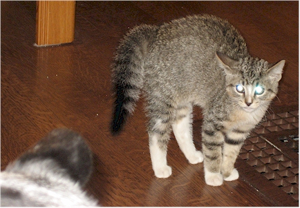
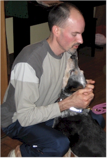
Jess was not exactly welcomed by Rocket / But her reunion with "Uncle Eric" was very heart warming

We tried to do a group picture but Rocket can't sit still that long.
Dirty Santa party which is always great fun.
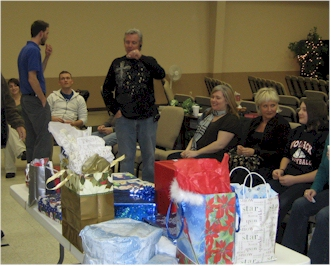
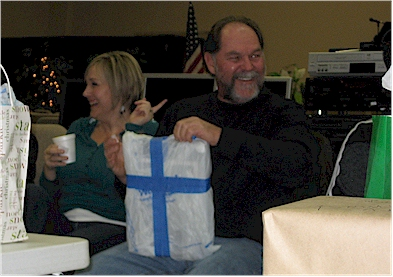
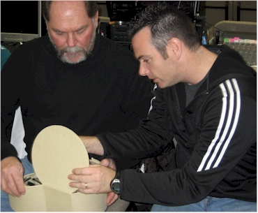
Tonya and JR, cutting up / JR and Greg checking out a makeup kit JR was instructed to "steal."
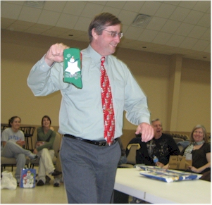
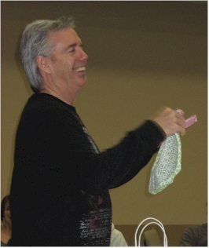
Nelson, showing off some lovely Christmas socks that no one stole from him / Pastor Ken displaying a lovely floral lunch bag
for a late-night gathering to welcome home some troops.
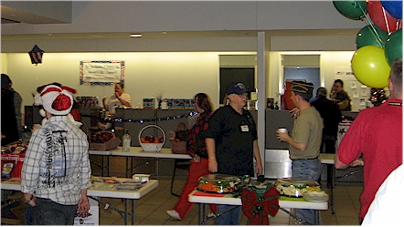
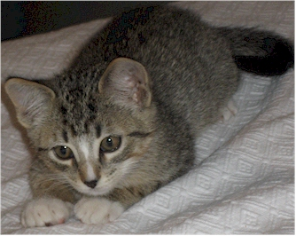
Here he is about to pounce on the laser pointer.
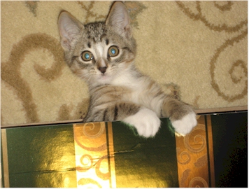
Here he helps me wrap gifts.
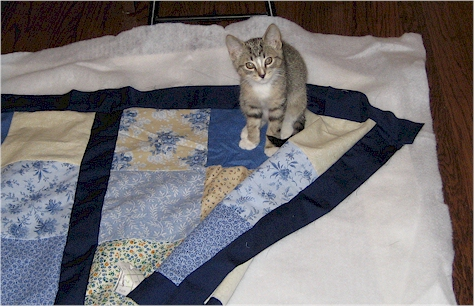
Here he helps me make a quilt for my sister Desirae.
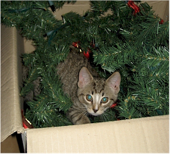
And here, the ever-helpful kitty helps me put away
the Christmas decorations.
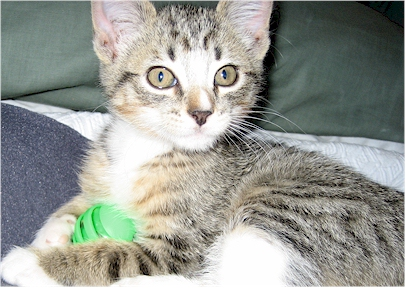
Happy Birthday to me! I got my 40th
birthday gift from Eric early this year.
A gas-powered pressure washer - woo hoo! I have a passion for
power-washing
and now I can super clean stuff whenever I want. (Even the neighbor's
stuff if they're not looking!)
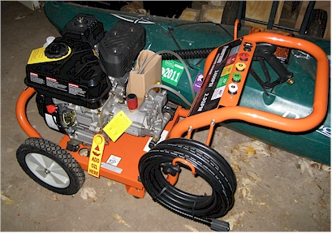
Speaking of birthdays, Happy Birthday
Eron! My friend Eron had a birthday on December 3rd
and a bunch of us girls from church got together to take her out for the
evening. We went bowling and
out to dinner at Joe's Crab Shack. It was a great time!
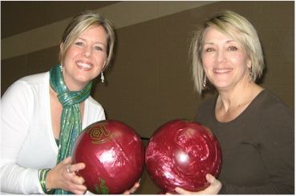
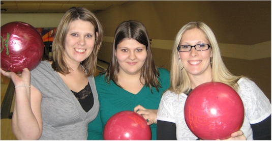
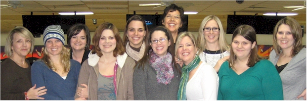
Scenes from the AIS Christmas Party at
the OKC Country Club.
Our ex-coworker and still friend Lisa Hill's Christmas party was there then
too - so we got to see her as we came in.
We had a Christmas tree decorating contest after lunch and my team got 2nd place - yea!
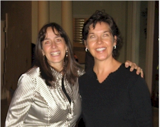
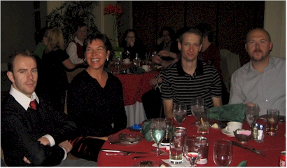
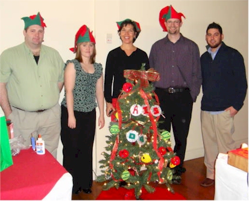
Our team, "The Misfits" proudly posing with our 2nd place tree.
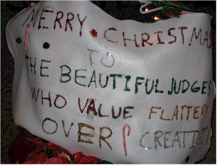
Another entry in the contest. The sign reads, "Merry Christmas to the beautiful judges who value flattery over creativity."
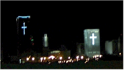
I am so proud of my city. I suspect that very few
cities in this great country have the courage to acknowledge
that the birth of Jesus Christ is what we are celebrating.
Hurray for Oklahoma City!!
Ron's Christmas Fantasia
This is what happens to your office when you go on
vacation and your co-workers have some free time.
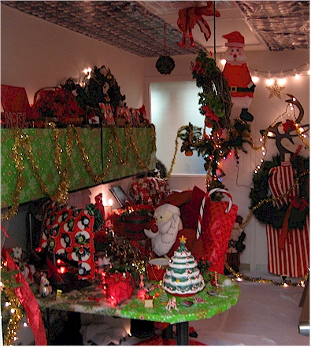
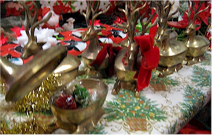
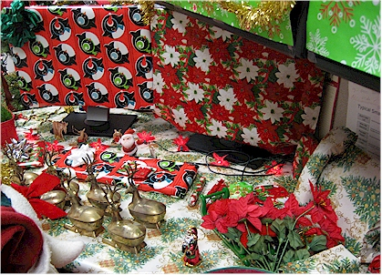
The attention to detail was exquisite.
Notice the 20-year old candy inside the reindeer, the wrapped phone, monitors, desktop, and pen.
History in the making! Eric and I are
developing a product called,
"Memorize Scripture - On the Go!" which is an audio CD + workbook
packet
to help people memorize verses from the Bible.
Here we are in the very nice home-based recording studio of my friend
Rob.
My friend Ray is the 'voice of MSOTG' and is truly excellent. Exciting!
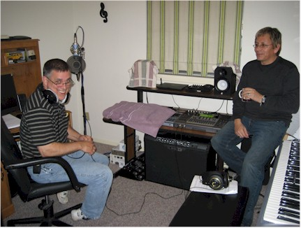
In early November, a gang of us met for
Mexican dinner and a great concert.
Here we are at dinner: Kristin, Eric H., Ellie, Me, Eron, and Levi
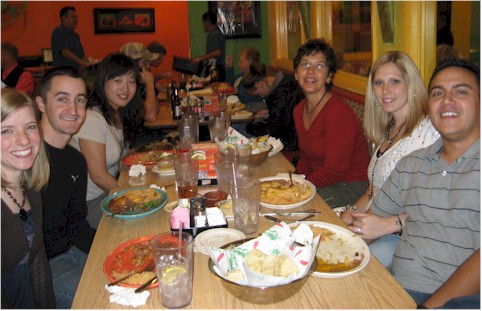
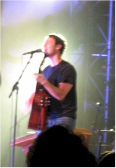
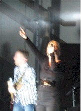
This was Bebo Norman & Natalie Grant
(they were clearer in person.)
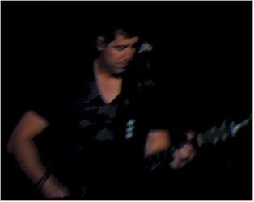
Jeremy Camp - also less blurry in person.
A beautiful afternoon in our beautiful park - Edgemere Park, OKC
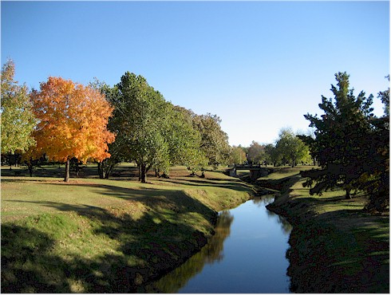
Here we are at a very fun evening spent
at Michael's house where
he hosted a neighbor dinner - several of us from the street got together
for a really great time.
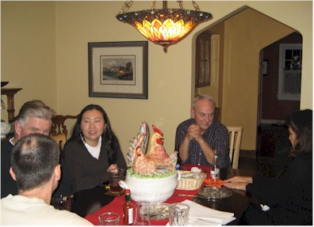
Here I am out to dinner with Ellie, one of
my new
International Friends. I met her through the,
"International Friendship Families" program at OCU.
She is awesome!
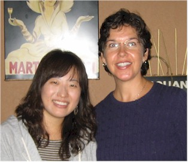
On Saturday, September 26 2009 I ran
the 5K of the Capitol Challenge.
My friend LaRhonda ran the 10K and her son Gary ran the 1 mile.
Daughter Bailey & husband Kendall took these pictures.
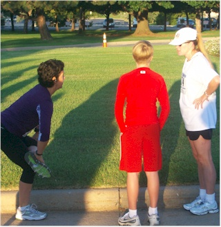
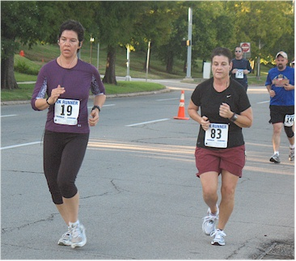
Yes, I was as happy as I looked. It was hard!
I saw the interesting clouds with this
church steeple
after a run one day in Edmond.
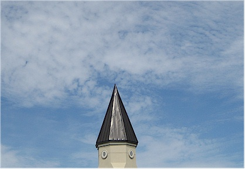
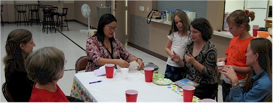
on an outing while they are in town for Encyclomedia.
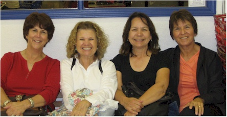
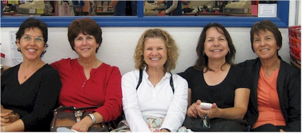
Me with the gang - we were trouble-makers.
The rest of the gang also had a rock climbing outing, I just camped.
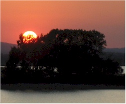
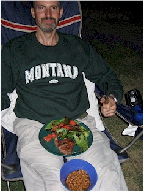
Eric - very pleased with the feast
Rusty & Cody put on.
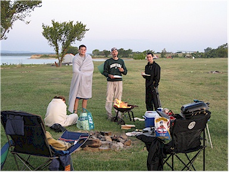
The next morning was COLD and windy!
The day improved as it progressed, thank goodness.
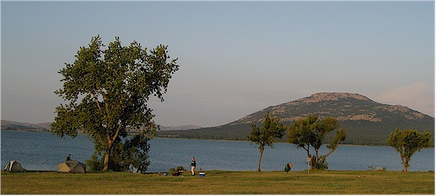
A view of our camp site with Lake Latonka & Mt. Scott in the background.
day in Tulsa in honor of Mom's birthday. August 2009
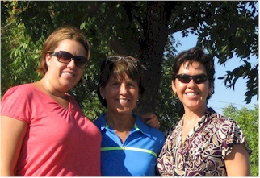
On Monday afternoon, August 17 our good
friends the Gruenthers
lost their apartment to a fire caused by a lightening strike.
Thankfully, everyone: Luc, Cassy, brother Chance, and sweet dog Jess are all
unharmed.
Sadly, they lost almost everything they owned. Here is the news
story.
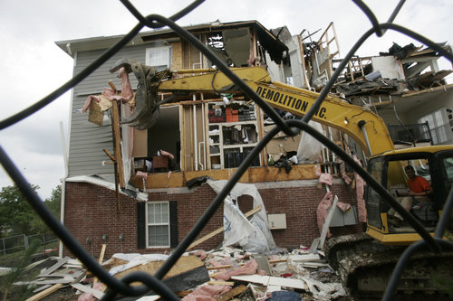
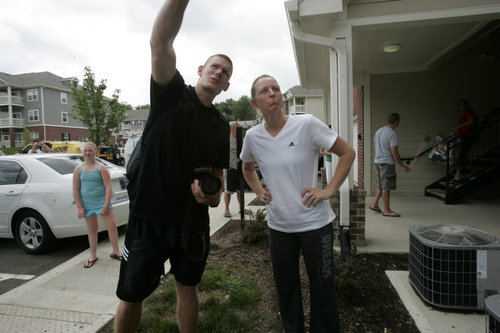
Luc & Cassy watching as their apartment is destroyed in order to stabilize the building.
On Saturday, August 15 we enjoyed
a really great comedy show by Kenn Kington
On Saturday, August 15 we went to a
baby shower for the soon-to-be-born Alex Chavez.
Here big sister Kayla shows off both her new glasses and Tito, who was a bit
skiddish.
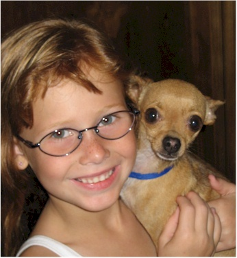
Jason, Levi, and Eric - too busy laughing to pose for the camera
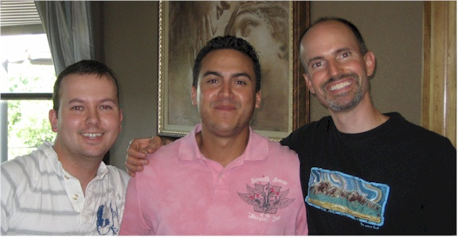
Rusty filling in an Eric
sandwich.
Jokes, man, jokes!
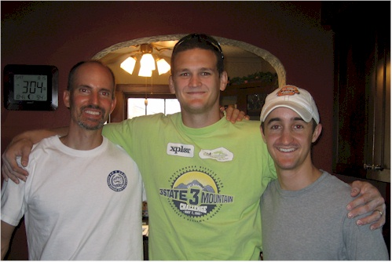
Here's a shot of our church, Calvary
Chapel of OKC
after some recent cosmetic work to make it look more "church-ey."
I like the results, but we know what matters most is what's
at the heart of a church and CCOKC has that totally nailed.
(Pun intended)
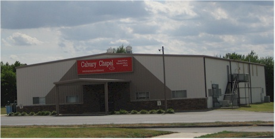
July 31 - August 2 I went to a
Ladies Retreat in Dallas with
some ladies from my church. I drove the van - which was the cause
of much fervent prayer! :-) Below you see our blue chariot awaiting
us.
This was the gang at the retreat - what an awesome group of ladies!
in this empty field for the church that Heartland International wanted to build here.
Heartland
International does great work all around southeast Asia.
Here we are out for a great evening with our friends
Greg & Janie at a Brazilian restaurant
Another successful Blue Star Mothers pack
day.
Those ladies know how to run an operation!
T'was the season for sibling visits -
the day after we saw Amy, we also got to see brother Larry.
Eric had hurt his back, but a visit from big brother had him up and about in
no time.
We made Larry run the grill for us and had hamburgers with the works. It was
a fun evening.
Our sister-in-law Amy came down from
Montana to visit her Grandma in June.
We were fortunate enough to spend a morning with her and a few hours at
Grandma's
talking with Grandma, Amy, Amber, Tralika, and baby Aubrey.
It was a very nice visit.
Mall of America - on a business trip with my co-workers Matt S. & Barbara
Photographic evidence of the birds eating our house.
OKC Sunset on Monday night, May 25th
My sister Desirae sent me this picture of her
husband, Keith.
The caption was, "What white guys have to do to stay out of the
sun."
He's a creative guy - you've got to hand it to him!!
Dad with his tractor
Desi with Keith and her new friend at the
Renaissance Faire in Muskogee
Mom has a thing for hats...
...and apparently, for bears too.
Mom with Momma Kitty - true love!
I attended Doaa's graduation on May 9th. She got her MBA from OCU. I'm very proud of her!
This is Doaa with her brother Omar.
The morning of May 9th I
met my friend Candice for a great morning.
We had breakfast, then went to Lake Thunderbird and took a bike ride.
On May 8th we had a very fun evening with
Ken, Sherry, Lena, and Dan.
Here we are about to play a rousing game of Balderdash. It was a lot
of laughs!
Mom came to town April 25 & 26
to run the half marathon (13.1 miles) at the
Oklahoma City Memorial Marathon. Here we are out to dinner with Doaa.
(Eric took the pic.)
Here's Mom at the starting line at 6:30am.
My friends LaRhonda & Kendall
Mom at the finish line - yea Mom!!
We had a fun evening with Dan &
Lena Hunt -
dinner on the patio then an outing to the Arts Festival.
Here Eric repairs the mortar that the birds keep eating away.
I took a Compass & Navigation class
with the OKC Outdoor Network.
My compass had North & South confused so I was a remedial student!
Our church had a Seder dinner to observe Passover
on April 10th
Here Pastor Ken explains each part of the dinner.
These are some of the ceremonial elements.
(Don't worry - this was followed by a full-on pot luck.)
Pastor Ken - he preaches, teaches, and carries tables.
This started as innocent cleaning but ended in a vacuum duel.
We had the honor of helping Doaa with an art project one night - we BBQ'd water bottles!
On a short trip home to Westville, I got
this shot of Mom's
beautiful cat, Momma Kitty helping us sort running clothes.
Here are some pictures of the sweet daughter of our friends Martin & Tonnie Beck: Leila Grace
"Archive 2015-2014" "Archive 2013-2012" "Archive 2011"
"Archive 2010" "Archive 2009" "Archive 2008"
"Archive 2007-2006" "Archive 2005-2004" "Archive 2003"